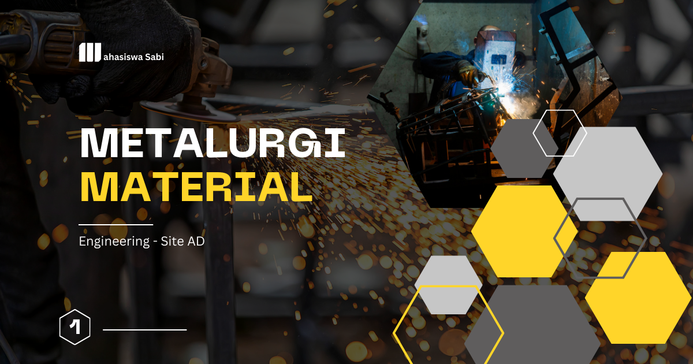

Rekayasa Bahan Baku Polimer
Rekayasa Bahan Baku Polimer: Mengembangkan Material dari Sumber hingga Produk Inovatif
Rekayasa Bahan Baku Polimer merupakan bidang pembelajaran yang membahas pemilihan, pengolahan, modifikasi, dan pengembangan bahan baku untuk menghasilkan material polimer dengan karakteristik sesuai kebutuhan. Polimer adalah material yang tersusun atas molekul berantai panjang dan dapat ditemukan dalam plastik, karet, serat sintetis, perekat, serta pelapis. Dalam program studi Teknik Metalurgi dan Material, mata kuliah ini membantu mahasiswa memahami hubungan antara jenis bahan baku, struktur molekul, proses pembuatan, dan sifat akhir polimer agar dapat dikembangkan menjadi material yang kuat, ringan, fungsional, dan berkelanjutan.
Fokus yang Dipelajari
- Jenis dan sumber bahan baku polimer: mempelajari monomer, bahan berbasis petrokimia, serta bahan baku terbarukan yang berasal dari biomassa dan limbah organik.
- Struktur dan klasifikasi polimer: memahami termoplastik, termoset, elastomer, serta pengaruh struktur rantai molekul terhadap sifat material.
- Sintesis dan polimerisasi: mempelajari proses pembentukan polimer, termasuk polimerisasi adisi dan kondensasi, serta faktor yang memengaruhi massa molekul dan struktur rantai.
- Modifikasi bahan baku: memahami penggunaan aditif, bahan pengisi, penguat, dan modifikasi kimia untuk meningkatkan kekuatan, fleksibilitas, kestabilan termal, atau ketahanan terhadap lingkungan.
- Pengolahan bahan polimer: mengenal proses ekstrusi, pencetakan injeksi, pencetakan tekan, dan teknik manufaktur lainnya untuk menghasilkan produk dengan bentuk serta karakteristik tertentu.
- Karakterisasi dan pengujian: mempelajari pengujian sifat mekanik, termal, dan kimia untuk mengevaluasi kualitas bahan baku maupun produk polimer.
- Keberlanjutan bahan baku: mengevaluasi penggunaan bahan terbarukan, material daur ulang, efisiensi sumber daya, dan dampak lingkungan sepanjang siklus hidup polimer.
Perannya dalam Teknik Metalurgi dan Material
Rekayasa Bahan Baku Polimer memperluas pemahaman mahasiswa mengenai material nonlogam yang banyak digunakan bersama logam dan keramik dalam berbagai produk teknik. Mata kuliah ini mengajarkan bahwa sifat polimer tidak hanya ditentukan oleh jenis bahan bakunya, tetapi juga oleh struktur molekul, berat molekul, kristalinitas, bahan tambahan, dan kondisi pemrosesan. Pemahaman tersebut membantu mahasiswa memilih serta merancang polimer yang sesuai dengan kebutuhan kekuatan, ketahanan panas, fleksibilitas, dan stabilitas kimia.
Dalam bidang Teknik Metalurgi dan Material, pengetahuan ini juga mendukung pengembangan material komposit yang menggabungkan polimer dengan serat, partikel, atau material lain. Contohnya adalah komposit polimer berpenguat serat yang digunakan untuk menghasilkan komponen ringan dengan kekuatan tertentu. Mahasiswa juga dapat memahami peran polimer sebagai pelapis pelindung, bahan isolasi listrik, perekat struktural, dan komponen fungsional dalam sistem industri.
Kegunaan dalam Masyarakat, Riset, dan Pekerjaan
Rekayasa bahan baku polimer memiliki penerapan luas dalam kehidupan sehari-hari, mulai dari kemasan makanan, pipa, komponen kendaraan, kabel listrik, peralatan rumah tangga, hingga perangkat medis. Pemilihan bahan baku dan proses pengolahan yang tepat membantu menghasilkan produk dengan kualitas, keamanan, dan umur pakai yang sesuai. Dalam industri otomotif dan transportasi, misalnya, polimer dan komposit polimer digunakan untuk mengurangi bobot komponen, sedangkan dalam sektor elektronik, polimer tertentu berfungsi sebagai isolator dan pelindung komponen.
Dalam penelitian, bidang ini mendukung pengembangan plastik berkinerja tinggi, biopolimer, komposit berkelanjutan, serta bahan yang dapat didaur ulang. Mahasiswa dapat mempelajari cara memanfaatkan pati, selulosa, minyak nabati, atau bahan sisa industri sebagai sumber bahan baku alternatif, dengan tetap mengevaluasi kualitas dan kelayakan prosesnya. Kompetensi ini relevan bagi profesi seperti materials engineer, polymer engineer, process engineer, quality control engineer, product development engineer, dan peneliti bidang material. Keahlian dalam karakterisasi, pemilihan bahan, optimasi proses, serta evaluasi mutu menjadi bekal penting untuk industri manufaktur dan pengembangan produk.
Tren Rekayasa Bahan Baku Polimer Saat Ini
Salah satu tren utama adalah pengembangan polimer berbasis hayati (bio-based polymers) yang memanfaatkan sumber terbarukan, seperti pati, selulosa, minyak nabati, dan biomassa lignoselulosa. Pendekatan ini ditujukan untuk mengurangi ketergantungan pada bahan baku fosil dan membuka peluang pemanfaatan sumber daya terbarukan. Namun, polimer berbasis hayati tidak selalu dapat terurai secara alami, sehingga asal bahan baku, kebutuhan energi produksi, kinerja material, dan pengelolaan akhir masa pakai perlu dievaluasi secara menyeluruh. Baca kajian tentang polimer berbasis hayati untuk aplikasi maju.
Tren berikutnya adalah polimer yang mudah didaur ulang dan ekonomi sirkular. Peneliti mengembangkan desain polimer yang memungkinkan pemisahan, pemrosesan ulang, atau pemulihan monomer agar material dapat digunakan kembali. Selain daur ulang mekanis, daur ulang kimia seperti depolimerisasi dan pirolisis juga dikaji untuk mengolah jenis limbah polimer tertentu. Setiap metode memiliki batasan, termasuk kebutuhan energi, kontaminasi bahan, biaya, dan kualitas produk hasil daur ulang. Pelajari perkembangan metode daur ulang polimer.
Perkembangan lainnya adalah biopolimer dan biokomposit berkinerja tinggi. Bahan alami seperti selulosa, kitosan, pati, dan serat tumbuhan diteliti sebagai komponen polimer untuk kemasan, produk kesehatan, komponen ringan, dan aplikasi teknik. Penguatan dengan serat atau pengisi tertentu dapat meningkatkan sifat mekanik maupun fungsi material. Tantangan yang perlu diatasi mencakup ketahanan terhadap kelembapan, kestabilan termal, konsistensi bahan baku, dan kemampuan produksi skala industri. Baca ulasan tentang biopolimer dan biokomposit.
Selain itu, rekayasa polimer menggunakan kecerdasan buatan dan manufaktur aditif semakin berkembang. Machine learning dapat membantu memperkirakan hubungan antara komposisi, parameter pemrosesan, dan sifat akhir material sehingga formulasi dapat dioptimalkan dengan lebih terarah. Sementara itu, teknologi pencetakan 3D memungkinkan pembuatan komponen polimer dengan bentuk kompleks dan kebutuhan desain khusus. Perkembangan ini mendorong kebutuhan terhadap bahan baku dengan karakteristik yang konsisten, mudah diproses, dan sesuai dengan persyaratan aplikasi. Meski demikian, prediksi komputasi tetap perlu divalidasi melalui pengujian, dan kelayakan lingkungan perlu ditinjau berdasarkan siklus hidup material.
Kesimpulan
Rekayasa Bahan Baku Polimer merupakan mata kuliah penting dalam Teknik Metalurgi dan Material yang membekali mahasiswa dengan pengetahuan tentang sumber bahan baku, struktur molekul, sintesis, modifikasi, dan pengolahan polimer. Melalui pemahaman tersebut, mahasiswa dapat mendukung pengembangan material untuk industri manufaktur, otomotif, elektronik, kesehatan, dan lingkungan. Penguasaan bidang ini juga membuka peluang berkontribusi dalam inovasi polimer berbasis hayati, material daur ulang, komposit berkinerja tinggi, serta teknologi produksi yang lebih efisien dan berkelanjutan.
Mahasiswa Sabi
©Repository Muhammad Surya Putra Fadillah